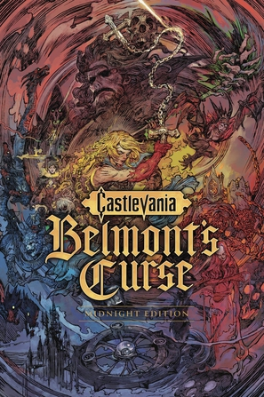
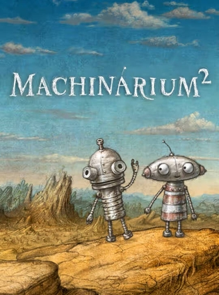

2026年10月
广播发布后不可编辑，所以每条都是那一刻的原话。
2026-10-15 21:48:00
闲逛豆瓣有感
说
突然想起那个领我入坑豆瓣的高中老同桌，点开账户却发现账号已经注销，这大抵就是备份豆瓣的意义吧～ 当好友注销了账号：从「页面不存在」到 WARC 里复活的高中同桌 —— 开发日志 @豆友69305634
2026-10-15 14:58:58

出新了
2026-10-14 04:02:28
 想看 美国往事 / Once Upon a Time in America
想看 美国往事 / Once Upon a Time in America
2026-10-11 14:18:47
上传照片到 Doubak 豆备 的截图相册
2026-10-11 11:32:51
看过 逃出绝命街 / The End of Oak Street ★★☆☆☆
这片子不卖座的原因我算是懂了，真就拍的很一般，安妮海瑟薇来了也没用
2026-10-10 19:02:41
看过 中头奖还是要上班 / 로또 1등도 출근합니다 ★★★☆☆
感觉纯纯的标题党，因为不中头奖也还是要上班，中的头奖也还是一分钱没花。就期待值过高，以至于落差太大。中规中矩的职场剧了就是。
2026-10-10 13:54:30

看到预告了！！期待！！
2026-10-10 13:48:11
香草社！！！
2026-10-10 06:15:10
2026-10-09 19:58:05
诶，忘了标记，刚出来的时候就开始玩，然后还没打完。。星之卡比真是可爱啊，这个还有双人模式
2026-10-07 20:46:03
旧版评分好高啊，虽然是个小众游戏，准备PS5上试试
2026-10-06 20:13:24
分享网页
哎我也是以前条目被删了，当时记得还写了好大一串~
2026-10-06 20:12:17
玩过 捞女游戏 Revenge on Gold Diggers ★★★★☆
我真的无语，我很确定以前还叫《情感反诈模拟器》的时候就标记过，豆瓣删条目又重建条目了看来。当时我还说里面一些恋爱小贴士做的还不错的。不过anyway，这部其实制作还挺精良的
2026-10-06 20:08:39
老婆偷偷买了这个游戏，正好我也有借口玩一下 🤭 先从新世界线支线玩起吧。豆瓣的条目建的真的是杂乱啊
2026-10-06 20:05:56
玩过 女王的游戏：盛世天下 媚娘篇 ★★★★★
之前玩《隐形守护者》就觉得制作精良，这次《盛世天下》依然是无出其右。很精彩的宫斗~
2026-10-06 14:55:54
想读 死后的世界
人到了年纪就会开始emo啊
2026-10-05 20:44:35
玩过 剑星 스텔라 블레이드 ★★★★☆
Nier Automata既视感（当然确实也跟Nier联动了！），但是多了很多跟老贼学的躲在墙后面的怪给我搞自闭了。然后大部分都是密闭空间、地下的地图，真的有点幽闭恐惧症了都。但是总体来说还是不错的，流程不长，一大半的boss都是在最后几个小时出来的，以至于看数据库boss一直是空着的感觉奇怪。最后的宇宙地图真是太漂亮了。这游戏能顶着DEI的压力走出来真不容易，虽然衣服设计也有点走极端的意思~
2026-10-05 11:03:06
看过 星球大战：曼达洛人与古古 / Star Wars: The Mandalorian & Grogu ★★★★☆
曼达洛人大电影终于来了，还不错，古古逐渐变成吉祥物，而不是大师。最后曼达教古古开飞船太温馨了
2026-10-04 12:05:26
看过 转生成自动贩卖机的我今天也在迷宫徘徊 / 自動販売機に生まれ変わった俺は迷宮を彷徨う ★★☆☆☆
本来嘛，从日本玩了一圈，对自动贩卖机自带好感。但是看这个番，看了半季感觉不行了，有点看不下去，困，所以决定郑重弃番。
2026-10-04 11:55:15
看过 二十世纪电气目录 / 二十世紀電氣目録-ユーレカ・エヴリカ- ★★★★☆
好吧，就这么结束了。想看的CP没有，没想到的CP倒是出现了。另，这个故事怎么这么离谱啊，看完感觉智商被侮辱了一般。虽然京阿尼的画风还是满满的诚意，但是我总感觉这个剧本不应该拿大赏啊？总之翻篇了，期待下一部。 //怎么京阿尼在这也能埋上音乐番的影子！ //看完了两集，真的是奇幻，op像海猫鸣泣之时，ed太特别了想不出来像啥。画风还是原汁原味的京阿尼，期待后续！
2026-10-04 11:46:47
看过 然后国王说，好个奇异的机器 / And the King Said, What a Fantastic Machine ★★★☆☆
一个用别人拍的视频拼凑出来的纪录片，结构确实略显杂乱，但是很多确实是我所不知道的视频/图像。当然，收集起来也是花了功夫的，但是结构确实短板。主题非常有意思~ 摄影的出现确实是一直在改变我们的生活，以前长镜头可以代表真实，ai时代这一切都被推翻了，摄影技术将何去何从？
2026-10-01 05:22:29
想看 喜人奇妙夜3
延了这么久，终于定档了